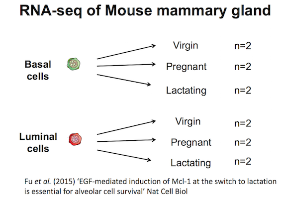
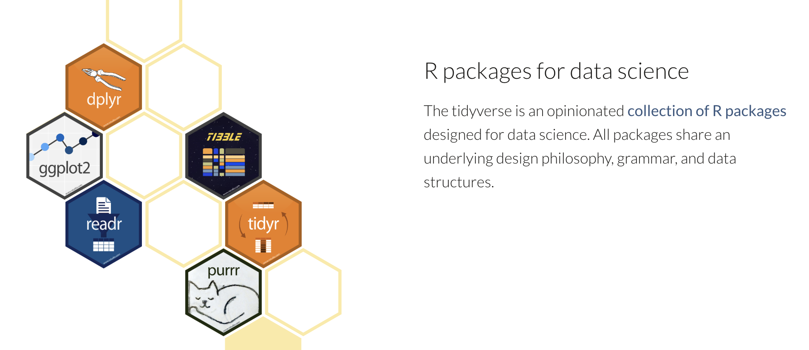

library(tidyverse)Getting started with data
Data files
The data files required for this workshop are available on GitHub. To download the data.zip file, you can click here. Unzip the file and store this data folder in your working directory.
RNA-seq dataset
Here we will create some plots using RNA-seq data from the paper by Fu et al. 2015, GEO code GSE60450. This study examined expression in basal and luminal cells from mice at different stages (virgin, pregnant and lactating). There are 2 samples per group and 6 groups, 12 samples in total.

Tidyverse
In this course we will use the tidyverse. The tidyverse is a collection of R packages that includes the extremely widely used ggplot2 package.

The tidyverse makes data science faster, easier and more fun.
Why tidyverse? Why tidy data? Why is it such a game-changer?
Loading the data
We use library() to load in the packages that we need. As described in the cooking analogy in the first screenshot, install.packages() is like buying a saucepan, library() is taking it out of the cupboard to use it.
The files we will use are csv comma-separated, so we will use the read_csv() function from the tidyverse. There is also a read_tsv() function for tab-separated values.
We will use the counts file called GSE60450_GeneLevel_Normalized(CPM.and.TMM)_data.csv that’s in a folder called data i.e. the path to the file should be data/GSE60450_GeneLevel_Normalized(CPM.and.TMM)_data.csv.
We can read the counts file into R with the command below. We’ll store the contents of the counts file in an object called counts. This stores the file contents in R’s memory making it easier to use.
# read in counts file
counts <- read_csv("data/GSE60450_GeneLevel_Normalized(CPM.and.TMM)_data.csv")New names:
Rows: 23735 Columns: 14
── Column specification
──────────────────────────────────────────────────────── Delimiter: "," chr
(2): ...1, gene_symbol dbl (12): GSM1480291, GSM1480292, GSM1480293,
GSM1480294, GSM1480295, GSM148...
ℹ Use `spec()` to retrieve the full column specification for this data. ℹ
Specify the column types or set `show_col_types = FALSE` to quiet this message.
• `` -> `...1`# read in metadata
sampleinfo <- read_csv("data/GSE60450_filtered_metadata.csv")New names:
Rows: 12 Columns: 4
── Column specification
──────────────────────────────────────────────────────── Delimiter: "," chr
(4): ...1, characteristics, immunophenotype, developmental stage
ℹ Use `spec()` to retrieve the full column specification for this data. ℹ
Specify the column types or set `show_col_types = FALSE` to quiet this message.
• `` -> `...1`There is some information output by read_csv on “column specification”. It tells us that there is a missing column name in the header and it has been filled with the name “…1”, which is how read_csv handles missing column names by default. It also tells us what data types read_csv is detecting in each column. Columns with text characters have been detected (col_character) and also columns with numbers (col_double). We won’t get into the details of R data types in this tutorial but they are important to know and you can read more about them in the R for Data Science book.
In R we use <- to assign values to objects. <- is the assignment operator. It assigns values on the right to objects on the left. So to create an object, we need to give it a name (e.g. counts), followed by the assignment operator <-, and the value we want to give it. We can give an object almost any name we want but there are some rules and conventions as described in the tidyverse R style guide
We can read in a file from a path on our computer on on the web and use this as the value. Note that we need to put quotes (““) around file paths.
ⓘ Assignment operator shortcut
In RStudio, typing Alt + - (holding down Alt at the same time as the - key) will write <- in a single keystroke in Windows, while typing > Option + - (holding down Option at the same time as the - key) does the same in a Mac.
Exercise
Test what happens if you type
Library(tidyverse)
What is wrong and how would you fix it?Test what happens if you type
libary(tidyverse)
What is wrong and how would you fix it?Test what happens if you type
library(tidyverse
What is wrong and how would you fix it?Test what happens if you type
read_tsv("data/GSE60450_filtered_metadata.csv")
What is wrong and how would you fix it?Test what happens if you type
read_csv("data/GSE60450_filtered_metadata.csv)
What is wrong and how would you fix it?Test what happens if you type
read_csv("GSE60450_filtered_metadata.csv)
What is wrong and how would you fix it?What is the name of the first column you get with each of these 2 commands?
read.csv("data/GSE60450_filtered_metadata.csv")
and
read_csv("data/GSE60450_filtered_metadata.csv")If you run
read_csv("data/GSE60450_filtered_metadata.csv")
what is the difference between the column header you seedevelopmental stageand ‘developmental stage’?